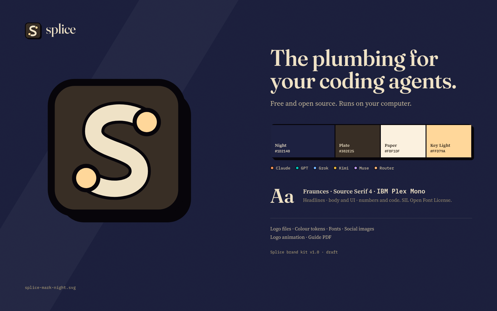
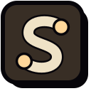
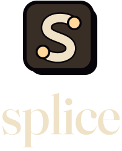
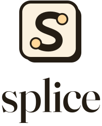
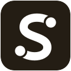
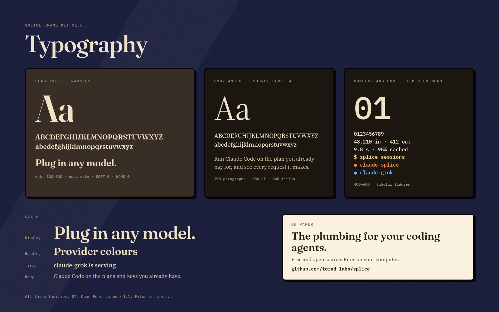
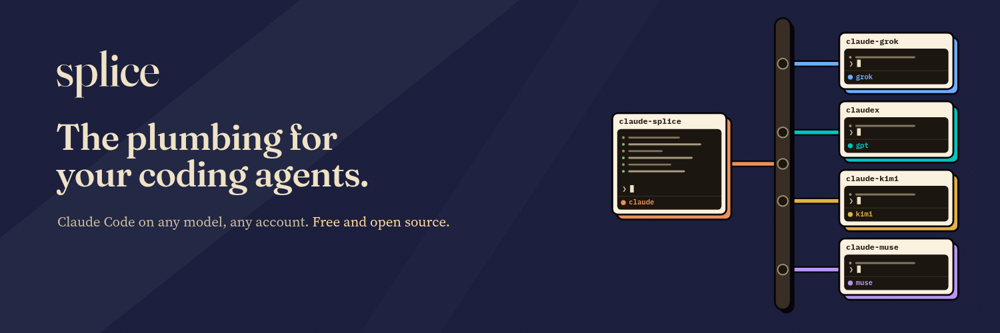
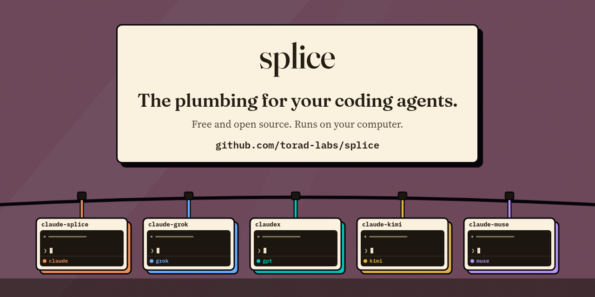
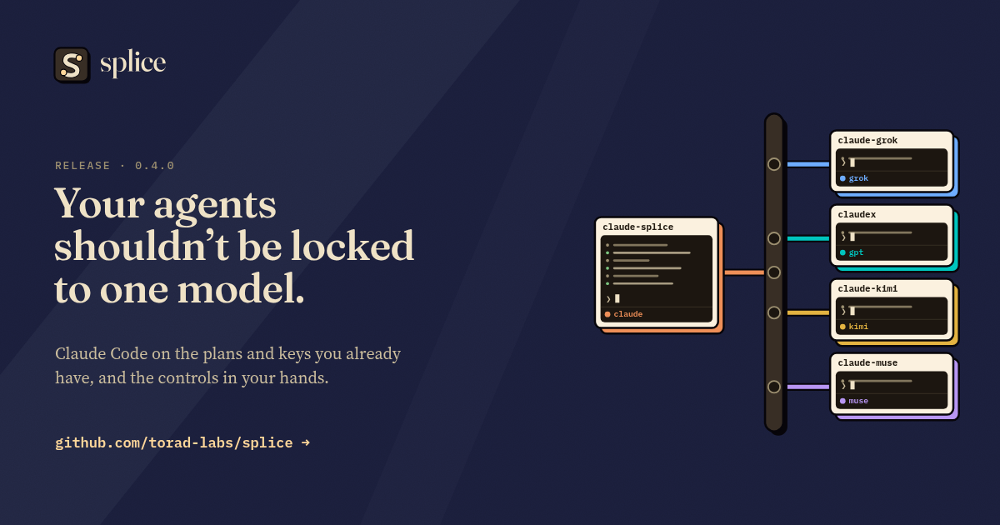
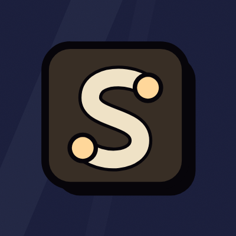

The plumbing for your coding agents.
This page is the index of the Splice brand kit. It shows the logo files, colours, fonts, logo animation and social images, with sizes and when to use each. Full rules are in the guide PDF and GUIDELINES.md.
Overview image · Type specimen · Guide (PDF) · Whole kit (zip) · Rules (text)



Logo files
The mark is a cable shaped like a lowercase s with a plug at each end. Clear space: one quarter of the plate width. Minimum sizes: 48 px for the mark with shadow, 24 px for the flat mark, favicon at 16 to 32 px. Do not retype, stretch, rotate or recolour any of these files.


Dark backgrounds

Light backgrounds

Headers, nav bars

Headers on light


Square spaces


Square spaces, light

One colour, light


One colour, dark

Wordmark alone

Wordmark alone, light
Colours
| Name | Hex | RGB | Use |
|---|---|---|---|
| Night | #1D2140 | 29 33 64 | Default background for every dark surface. About 70% of a frame. |
| Night Low | #141731 | 20 23 49 | Second background: side navigation, footers, table headers. |
| Plate | #382E25 | 56 46 37 | Logo plate and the rail in diagrams. Large dark objects. |
| Shell | #1C1610 | 28 22 16 | Terminal screens, stat boxes, dark cards. |
| Ink | #07050A | 7 5 10 | 3 px outlines and the 6 px offset shadow on every object. |
| Paper | #FBF1DF | 251 241 223 | Light cards, tooltips and end cards. Light-mode background. |
| Cream | #EFE2C6 | 239 226 198 | Body text and the wordmark on Night. |
| Key Light | #FFD79A | 255 215 154 | Accent. Primary button, focus ring, the active session. One use per view. |
| Dusk | #724C5E | 114 76 94 | Alternate background for end cards and the GitHub preview only. |
| Cream Body | #CBBD9D | 203 189 157 | Secondary text on Night. |
| Cream Mute | #9C8F70 | 156 143 112 | Captions and metadata on Night. |
| Day Ink | #241D14 | 36 29 20 | Body text and the wordmark on Paper. |
| Day Body | #4E4434 | 78 68 52 | Secondary text on Paper. |
| Day Mute | #6B604B | 107 96 75 | Captions and metadata on Paper. |
| Key on Paper | #8A5A12 | 138 90 18 | Accent text on Paper. Key Light itself is too pale to read on Paper. |
Provider colours
One fixed colour per provider for its cable, card shadow and model dot. Do not use them as backgrounds, for status, or as brand colours.
| Provider | Hex | Token | Contrast |
|---|---|---|---|
| Claude | #EE8F58 | --splice-cable-claude | 6.5:1 on Night |
| GPT | #00C5BE | --splice-cable-gpt | 7.2:1 on Night |
| Grok | #6EADFE | --splice-cable-grok | 6.8:1 on Night |
| Kimi | #E3B341 | --splice-cable-kimi | 8.0:1 on Night |
| Muse | #B896F3 | --splice-cable-muse | 6.5:1 on Night |
| Router | #F3B27A | --splice-cable-router | 8.5:1 on Night |
| Local | #7BC47F | --splice-cable-local | 7.5:1 on Night |
| DeepSeek | #EC93C3 | --splice-cable-deepseek | 7.1:1 on Night |
tokens/splice.css · tokens/splice.tokens.json · tokens/splice.contrast.json
Typography

Logo animation
Files are in motion/logo/. Each clip exists at 1920×1080 and 1080×1080, 24 fps, as MP4 (H.264), WebM with an alpha channel, GIF and transparent PNG frames. Intro and idle are also available as Lottie JSON and animated SVG; both have transparent backgrounds.
Intro. 3.5 s, plays once. Start of videos and talks.
splice-logo-intro-1920x1080 / -1080x1080: .mp4 · -alpha.webm · .gif · .json (Lottie) · .svg


Idle. 3.0 s loop. Avatars, headers, loading screens.
splice-logo-idle-1920x1080 / -1080x1080: .mp4 · -alpha.webm · .gif · .json (Lottie) · .svg


Outro. 3.5 s, plays once. End of videos.
splice-logo-outro-1920x1080 / -1080x1080: .mp4 · -alpha.webm · .gif

Request flow loop
Left: motion/splice-flow-loop.mp4, 4 s loop of a request going from a Claude Code session through the rail to one model. Right: motion/splice-mark-sting.mp4, a 2 s version of the logo reveal for small UI. Drawn objects update every second frame. Durations: 240 ms for small UI changes, 420 ms for large moves, ease-out cubic-bezier(.22,1,.36,1).
Social images

social/splice-x-banner-1500x500.png. Keep the bottom-left 300 × 170 px empty for the avatar.



Writing rules
Say what Splice does and what the user gets. Only describe features in a published release. Label staged scenes as demos. Do not invent numbers or quotes. Write provider names as plain text without their logos. Splice is not affiliated with any model provider. Details: GUIDELINES.md section 8.
Draft for review. Not yet used by the Splice app or repository. Torad Labs.